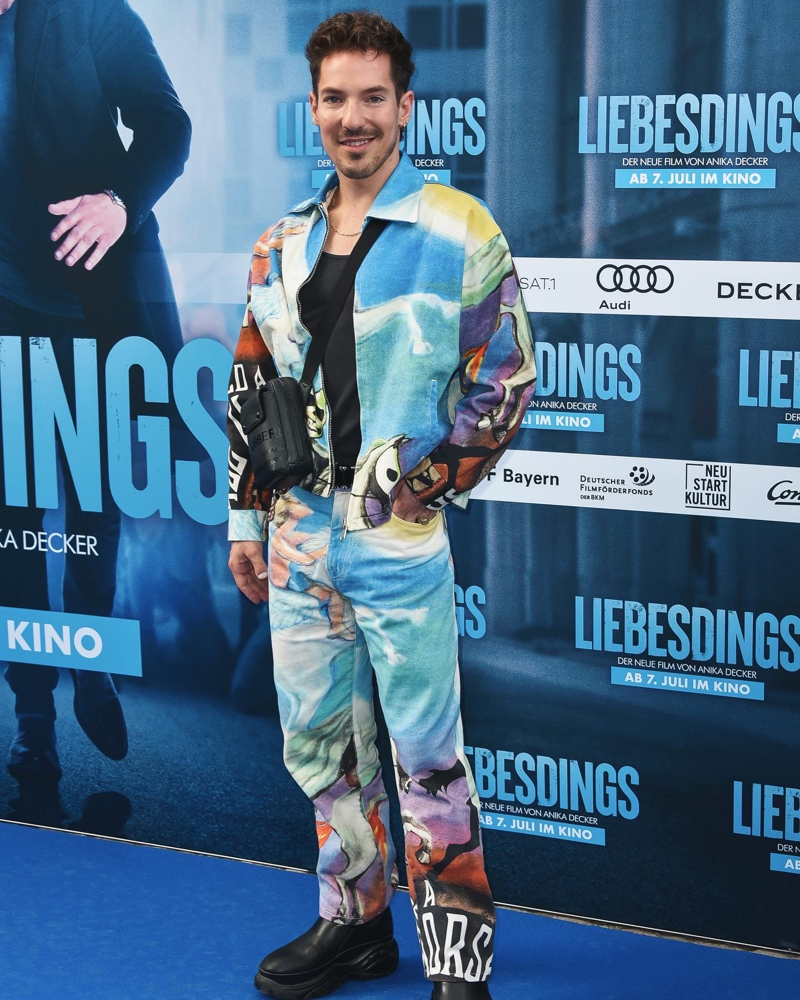
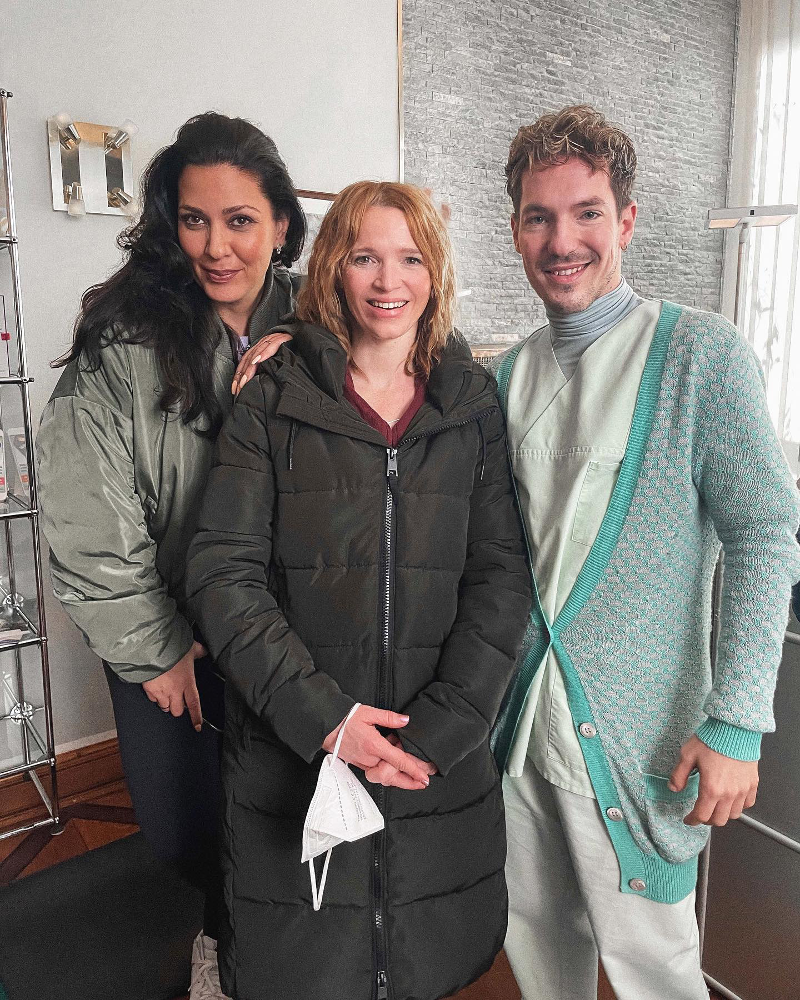
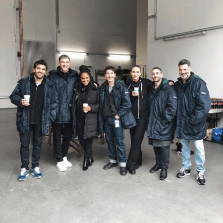

Nico Stank
Comedian & Schauspieler
News
06.2022
Premiere für den Kinofilm "Liebesdings" unter der Regie von Anika Decker in der Nebenrolle Bibo von Constantin Film
05.2022

Premiere für den Kinofilm "Freibad" unter der Regie von Doris Doerrie
11.2021
11.21 Dreht für den Kinofilm "Mal was Neues" unter der Regie von Karoline Herfurth von Warner Bros. Pictures
10.2021

10.21 Dreht für Comedy Central original "Minimocks" unter der Regie von David Waltl
09.2021

09.21 Zu Gast bei "Talk-O-Mat" ein Spotify Original Podcast
08.2021

08.21 Drehbeginn für den Kinofilm "Freibad" unter der Regie von Doris Dörrie in der Ensemblehauptrolle Kim von Constantin Film
03.2021
Dreht für den Kinofilm "Liebesdings" unter der Regie von Anika Decker in der Nebenrolle Bibo von Constantin Film
Aktuelle Termine
-
SEP17
Berlin
Admiralspalast - Theater
-
SEP23
Frankfurt Main
Batschkapp
-
SEP15
Bielefeld
Stadthalle
-
SEP12
Hamburg
Friedrich-Ebert-Halle
-
OKT01
Nürnberg
Meistersingerhalle
-
OKT02
Neu-Ulm
Edwin-Scharff-Haus
-
OKT15
Erfurt
Alte Oper
-
OKT16
Dresden
Alter Schlachthof
-
OKT22
Rostock
MOYA
-
OKT23
Lübeck
Kolosseum
-
NOV10
München
Werk7 Theater
-
NOV11
Bamberg
Konzerthalle
-
NOV18
Stuttgart
Theaterhaus
-
NOV19
Hannover
Theater am Aegi
-
DEZ04
Leipzig
Haus Leipzig
-
DEZ15
Mainz
Frankfurter Hof
Portfolio

© Elena Zaucke

© Elena Zaucke

© Elena Zaucke

© Elena Zaucke

© Elena Zaucke

© Elena Zaucke
About Me
NICO STANK, geboren im Ruhrgebiet, entdeckte schon in der Schulzeit seine Liebe für Schauspielerei und Comedy. Nachdem er fest im Jungen Ensemble des Schauspielhaus Bochums war, ließ er sich 2009 zum Musicaldarsteller ausbilden. Seit 2013 wohnt NICO in Berlin und arbeitet dort als Schauspieler, Synchronsprecher und Stand-Up-Comedian.
Nach diversen Engagements stand NICOs turbulente Welt mit Eintreten der Pandemie kurz still: Doch anstatt sich unterkriegen zu lassen zauberte er seinen Followern auf Social Media täglich ein Lachen ins Gesicht und unterhielt sie mit seiner unverwechselbaren Art.
2019 schuf NICO seine Kunstfigur Nicola und hat sich so zum ersten Mal richtig gefunden und akzeptiert. Auf der Bühne sowie auf Social Media versucht er, mit Selbstironie und Mut ein Vorbild für seine Follower*innen zu sein. Durch den Zuspruch seiner rapide wachsenden Community hat NICO gelernt, wie wichtig es ist man selbst zu sein und dass es okay ist, dies auch in all seiner Vielfalt zu zeigen.
Auf Instagram bringt Nico täglich Hunderttausende User zum Lachen, indem er Alltagssituationen zum Schreien komisch nachstellt. Diese Videos resultierten in Millionen Klicks, so dass auch Filmproduzenten auf sein Talent aufmerksam wurden: Dies brachte ihm Rollen in großen Kinofilmproduktionen ein. 2021 wurde Nico für eine der Hauptrollen im neuen Dorris Dörrie Film Freibad besetzt, stand neben Elyas M´Barek für Liebesdings unter der Regie von Anika Decker sowie neben Karoline Herfurth in Einfach mal was Schönes vor der Kamera.
Booking und Live-Tour
Jessica Emde
Tel: +49 221 6509-3970
E-Mail: Jessica.Emde@banijaylab.de
Kontakt Management
Feenja Koop
Tel: +49 152 56613592
E-Mail: f.koop@koopkom.com